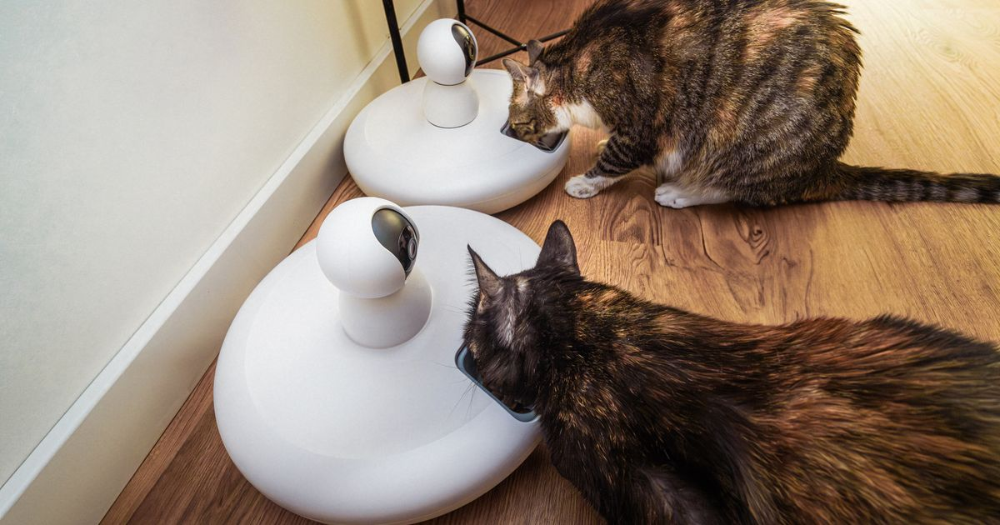
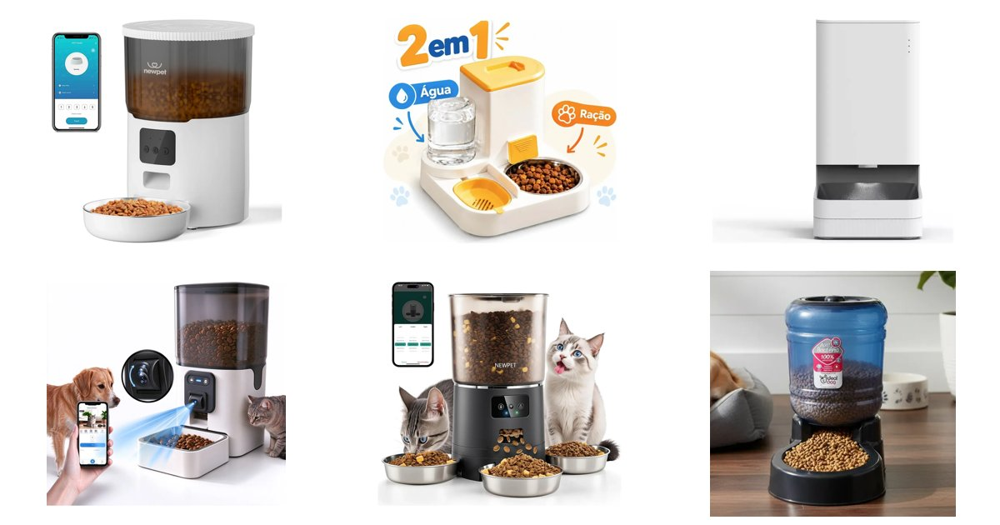
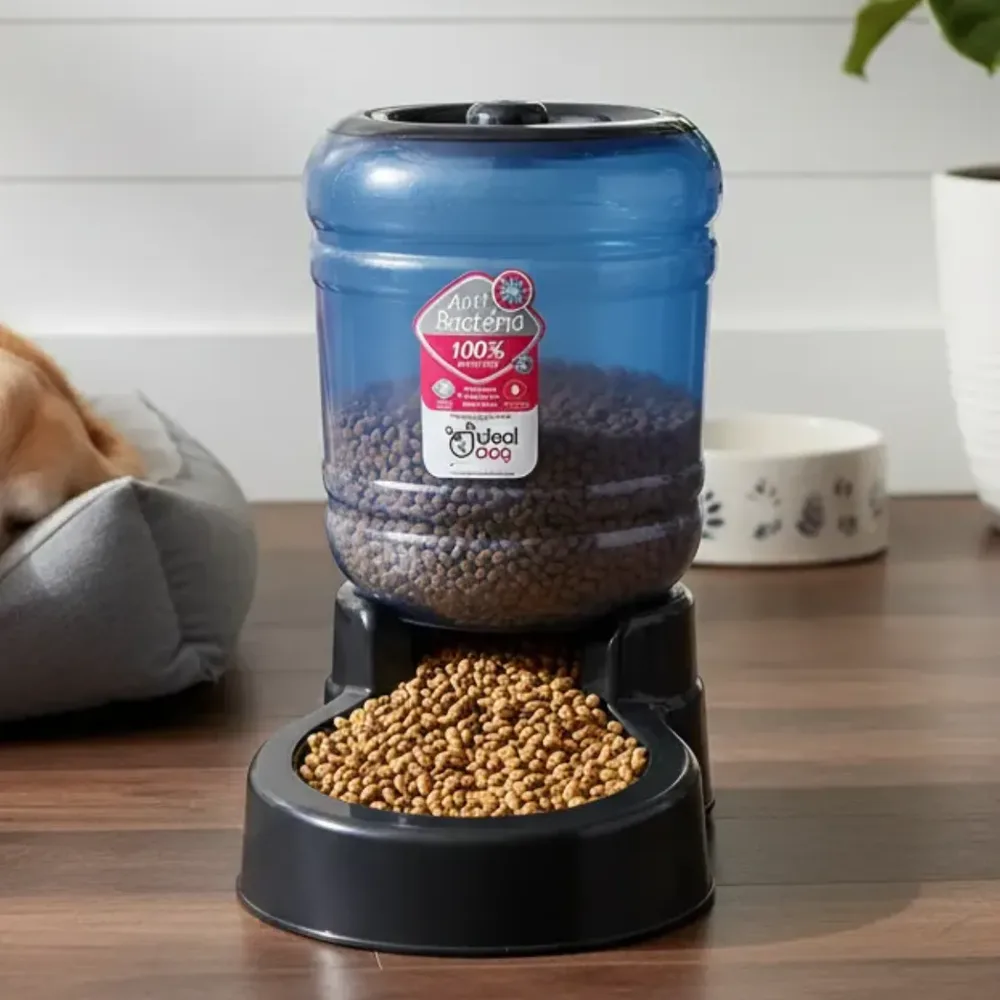
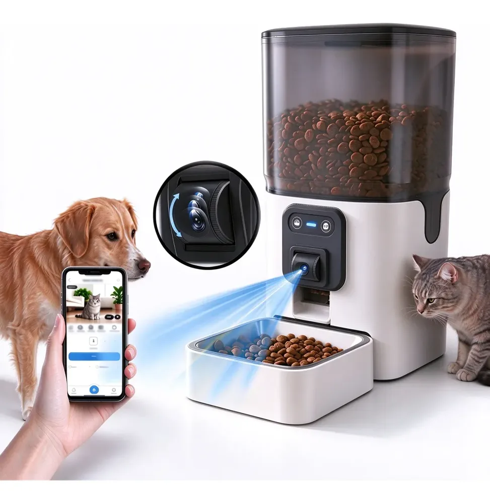
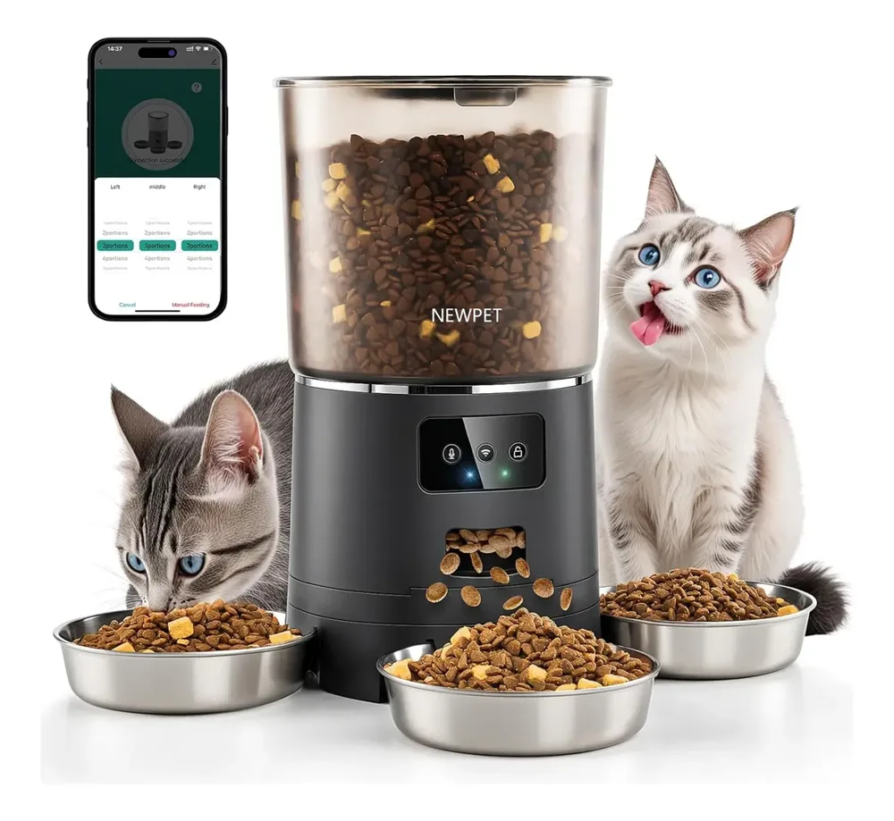
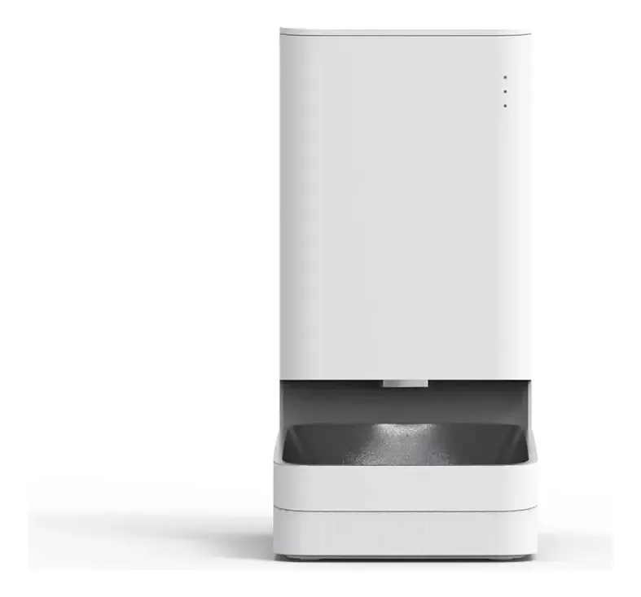

Comedouro Automático para Pet: Os 6 Melhores para Cães e Gatos em 2026 (Guia Completo)

O melhor comedouro automático para cães e gatos, entre os seis que comparamos, é o Newpet 4L com voz e app: programa até 40 porções de cerca de 5 g por refeição pelo celular, grava a sua voz para chamar o pet, funciona com pilhas se a luz cair e soma nota 4,9 em 208 avaliações e mais de mil vendas, por R$ 238,80 no Mercado Livre (preço de 15/11/2026). Se o orçamento é curto ou o cachorro é grande, o comedouro por gravidade Ideal Dog de 8 kg custa R$ 54,10 e não precisa de tomada. Para ver o pet comendo de longe, o alimentador com câmera de 6 litros sai por R$ 299,69, e para casa com vários gatos, o Newpet 6L com 3 tigelas custa R$ 328,90.
Newpet 4L com voz e app, comedouro automático com nota 4,9 em 208 avaliações.Link de afiliado — sem custo extra para você.
Ver preço no Mercado Livre →Escolha rápida
- Melhor no geral: Newpet 4L com voz e app (R$ 238,80, nota 4,9 em 208 avaliações)
- Mais barato e para cachorro grande: Ideal Dog 8 kg por gravidade (R$ 54,10, nota 5,0 em 24 avaliações)
- Com câmera: alimentador 6L com câmera e conversa por voz (R$ 299,69, nota 4,9 em 21 avaliações)
- Para vários gatos: Newpet 6L com 3 tigelas (R$ 328,90)
- Mais completo: Xiaomi Smart Pet Food Feeder 2 (R$ 1.299,99, com balança e sensor de nível)
- Comedouro e bebedouro juntos: 2 em 1 por gravidade (R$ 102,56)
Black Friday 2026: o alimentador Newpet com app caiu 38% desde 14/11, enquanto o Newpet 4L subiu 15% e o Xiaomi 5L, 23%. Veja o que subiu e o que caiu antes da Black Friday.
Comparativo: 6 Comedouros Automáticos para Cães e Gatos
A tabela coloca lado a lado os seis comedouros automáticos que selecionamos no Mercado Livre. Os preços foram consultados em 15/11/2026 e mudam com frequência, principalmente na Black Friday, então confira no link antes de comprar.
| Modelo | Tipo | Capacidade | Preço | App / Wi-Fi | Sem energia | Nota no ML | Indicado para | |
|---|---|---|---|---|---|---|---|---|
| Newpet 4L NP999 | Elétrico, timer | 4 L | R$ 238,80 | Sim (2,4 GHz) | 3 pilhas D | 4,9 (208) | Gatos e cães pequenos e médios | Ver preço |
| Ideal Dog 8 kg | Gravidade | 8 kg | R$ 54,10 | Não | Não usa energia | 5,0 (24) | Cachorro grande, orçamento curto | Ver preço |
| Alimentador com câmera | Elétrico, câmera | 6 L | R$ 299,69 | Sim, com vídeo | 4 pilhas AA | 4,9 (21) | Quem quer ver o pet à distância | Ver preço |
| Newpet 6L 3 tigelas | Elétrico, 3 saídas | 6 L | R$ 328,90 | Sim (Tuya, 2,4 GHz) | Pilhas | Sem avaliações | 2 ou 3 gatos | Ver preço |
| Xiaomi Feeder 2 | Elétrico, balança | 5 L | R$ 1.299,99 | Sim (Mi Home) | 4 pilhas AA | 5,0 (4) | Gatos e cães pequenos, quem quer dados | Ver preço |
| 2 em 1 gravidade | Gravidade, água + ração | 2,3 kg + 1 L | R$ 102,56 | Não | Não usa energia | Sem avaliações | Gato ou cão pequeno, ausências curtas | Ver preço |

Qual Comedouro Automático Escolher para o Seu Pet?
Antes da marca, responda três perguntas: o pet precisa de porção controlada ou pode comer à vontade? Quantos pets vão dividir o comedouro? E quantos dias ele fica sem você repor a ração? Essas respostas definem se você precisa de um comedouro elétrico com timer ou se um modelo por gravidade resolve.
| Situação | Escolha | Por quê |
|---|---|---|
| Quer horário e porção certos, sem gastar muito | Newpet 4L | Timer, app e voz com centenas de avaliações positivas |
| Cachorro grande ou orçamento abaixo de R$ 60 | Ideal Dog 8 kg | Maior reservatório da lista e sem energia |
| Quer ver e falar com o pet do trabalho ou da viagem | Alimentador com câmera | Vídeo e conversa por voz no app por menos de R$ 300 |
| Dois ou três gatos que brigam pela comida | Newpet 6L 3 tigelas | Porção separada em cada tigela |
| Gato em dieta, quer saber quanto ele comeu | Xiaomi Feeder 2 | Balança e sensor de nível mostram o consumo no app |
| Quer resolver água e ração num produto só | 2 em 1 por gravidade | Comedouro e bebedouro na mesma base |
Os 6 Melhores Comedouros Automáticos de 2026
Os dados de cada modelo vêm do anúncio no Mercado Livre e das avaliações publicadas por compradores. Não testamos os comedouros; veja como escolhemos.
Comedouro Automático 4L Newpet para Cães e Gatos com Voz e App

É o comedouro automático mais vendido e mais bem avaliado da lista: aparece como 4º mais vendido em Comedouros New Pet e soma mais de mil vendas. Pelo app você define horários e de 1 a 40 porções por refeição, cada uma com cerca de 5 g, e grava uma mensagem de voz de até 12 segundos que toca na hora da comida. Funciona na tomada e aceita 3 pilhas tipo D como reserva, para o pet não ficar sem comer numa queda de energia.
| Preço | R$ 238,80 (de R$ 298, 19% de desconto) ou 12x de R$ 23,64 |
|---|---|
| Capacidade | 4 litros (cerca de 4 kg de ração, segundo o anúncio) |
| Porções | 1 a 40 por refeição, cerca de 5 g cada |
| Conectividade | App pelo Wi-Fi 2,4 GHz |
| Energia | Tomada 127/220V, com 3 pilhas D de reserva (não incluídas) |
| Extras | Gravação de voz de 12 segundos |
| Medidas | 19 x 19 x 29 cm |
| Avaliações | 4,9 de 5 em 208 avaliações e +1.000 vendidos |
| Vendedor e garantia | Loja oficial New Pet (+50 mil vendas), envio Full; 30 dias de garantia de fábrica |
O resumo das opiniões do Mercado Livre diz que o comedouro "é elogiado pela sua fácil configuração e praticidade, sendo ideal para tutores ocupados" e que o aplicativo "é intuitivo".
"O produto parece ser muito bom, não tive problemas em baixar o app e programar, a minha internet é 2 e 5gb ele conectou bem, as porções são bem pequenas eu pesei e deu 5 gramas..."
★★★★★ comprador, Mercado Livre · 3 pessoas acharam útil"O comedouro é muito bom e fácil de usar. Porém ele desliga quando ocorre alguma queda de energia, e aí é preciso ligá-lo novamente."
★★★★★ comprador, Mercado Livre · 19 pessoas acharam útil- Nota 4,9 com mais de 200 avaliações e +1.000 vendidos
- Porção pequena (5 g), boa para gatos e cães pequenos
- Pilhas de reserva e gravação de voz
- Loja oficial com envio Full
- Só conecta em Wi-Fi 2,4 GHz
- Um comprador relata que precisa religar depois de queda de energia (sem pilhas instaladas)
- 4 litros pedem reabastecimento mais frequente para cão grande
🐾 Newpet 4L com voz e app, o comedouro mais vendido da lista: veja o preço de hoje.
Ver preço no Mercado LivreLink de afiliado: podemos receber uma comissão por compras feitas através deste link, sem custo adicional para você.
Comedouro Automático para Cães e Gatos Reservatório 8 kg Ideal Dog

É um comedouro por gravidade: a ração fica no galão e desce para a base conforme o pet come, sem motor, sem tomada e sem programação. Por isso custa pouco e não quebra fácil. O reservatório de 8 kg é o maior da lista, o que faz dele a escolha mais prática para cachorro grande e para fins de semana fora. A contrapartida: ele não controla a porção, então não serve para pet guloso ou em dieta.
| Preço | R$ 54,10 (de R$ 62,41, 13% de desconto) |
|---|---|
| Tipo | Gravidade (sem energia e sem timer) |
| Capacidade | 8 kg de ração, segundo o anúncio |
| Material | Plástico |
| Medidas | 41 x 24,9 x 38,5 cm |
| Avaliações | 5,0 de 5 em 24 avaliações e +100 vendidos |
| Vendedor e garantia | Polifershop (MercadoLíder, +10 mil vendas); 30 dias de garantia de fábrica |
"Exatamente como na foto. Armazena uma quantidade boa de ração para cães de grande porte. Produto altamente resistente!"
★★★★★ comprador, Mercado Livre · 2 pessoas acharam útil"Muito bom, praticidade pra quem quer fazer uma viagem sem se preucupar."
★★★★★ comprador, Mercado Livre- O mais barato da lista, por pouco mais de R$ 50
- Reservatório de 8 kg, o maior da lista
- Não depende de energia nem de Wi-Fi
- Nota 5,0 e vendedor MercadoLíder
- Não controla horário nem porção
- Não indicado para pet guloso, obeso ou em dieta
- Ocupa espaço (41 cm de comprimento)
🐶 Ideal Dog 8 kg, comedouro por gravidade para cachorro grande: veja o preço de hoje.
Ver preço no Mercado LivreLink de afiliado: podemos receber uma comissão por compras feitas através deste link, sem custo adicional para você.
Alimentador Pet Automático 6L com Câmera e Controle pelo App

Além de programar refeições, este alimentador tem câmera e permite conversar por voz com o pet pelo app, ver o vídeo ao vivo e assistir às gravações. Também grava uma chamada de 12 segundos que toca na hora da comida. É a forma mais barata da lista de acompanhar se o pet realmente comeu enquanto você está fora. O reservatório de 6 litros dura mais que o do Newpet 4L.
| Preço | R$ 299,69 (de R$ 437,50, 31% de desconto) ou 6x de R$ 49,95 sem juros |
|---|---|
| Capacidade | 6 litros (cerca de 2 kg de ração, segundo a ficha) |
| Porções | 1 a 40 por refeição, cerca de 5 g cada |
| Conectividade | Wi-Fi, app para Android e iOS, vídeo, conversa por voz e gravações |
| Energia | 127/220V, com 4 pilhas AA de reserva (não incluídas). O anúncio diz que o pacote não inclui adaptador de energia; confirme com o vendedor antes de comprar |
| Ração aceita | Seca e não pegajosa, grãos de 5 a 12 mm |
| Material | Aço inox e plástico |
| Avaliações | 4,9 de 5 em 21 avaliações e +100 vendidos |
| Vendedor e garantia | Vendedor com +1.000 vendas, envio Full; 60 dias de garantia do vendedor |
"Extremamente fácil de configura com câmera e áudio para chamar o pet estou muito satisfeito e estou usando para um pit bull se adaptou super bem..."
★★★★★ comprador, Mercado Livre"Sofri bastante pra conseguir instalar, e conectar no aplicativo, eu já estava quase desistindo, mas deu certo. A câmera a noite não dá pra ver nada, e o microfone as vezes não pega bem..."
★★★★☆ comprador, Mercado Livre · 3 pessoas acharam útil- Câmera e conversa por voz por menos de R$ 300
- 6 litros de reservatório
- Pilhas de reserva e envio Full
- 60 dias de garantia
- Câmera não enxerga no escuro, segundo um comprador
- Há relatos de dificuldade para conectar ao app
- Anúncio diz que não vem adaptador de energia
📷 Alimentador 6L com câmera e conversa por voz: veja o preço de hoje.
Ver preço no Mercado LivreLink de afiliado: podemos receber uma comissão por compras feitas através deste link, sem custo adicional para você.
Alimentador Automático Inteligente 6L com 3 Tigelas New Pet

A ração sai por três tigelas de inox, e pelo app você define a quantidade de cada uma (esquerda, centro e direita), de 1 a 20 porções, em até 10 refeições por dia. Assim cada gato recebe a própria porção e a disputa pelo pote diminui. Dá para usar com 1, 2 ou 3 tigelas. O anúncio destaca um mecanismo empurrador que evita entupimento e diz que os 6 litros duram até 20 dias para gatos.
| Preço | R$ 328,90 (de R$ 428, 23% de desconto) ou 12x de R$ 32,17 |
|---|---|
| Capacidade | 6 litros (até 20 dias para gatos, segundo o anúncio) |
| Porções | 1 a 20 por tigela, até 10 refeições por dia |
| Conectividade | App Tuya pelo Wi-Fi 2,4 GHz (não funciona em 5 GHz) |
| Energia | 127/220V, com pilhas de reserva |
| Extras | Gravação de voz de 10 segundos, tigelas de inox, base antiderrapante |
| Medidas | 20 x 20 x 26 cm |
| Avaliações | Ainda sem avaliações neste anúncio (+100 vendidos) |
| Vendedor e garantia | Loja oficial New Pet (+50 mil vendas), envio Full; 30 dias de garantia de fábrica |
Quem tem mais de um gato também pode ver as dicas de comedouro automático para dois gatos para evitar que um coma a porção do outro.
- Três tigelas com porção independente
- Até 10 refeições por dia
- Tigelas de inox, fáceis de lavar
- Loja oficial com envio Full
- Anúncio ainda sem avaliações de compradores
- Só funciona em Wi-Fi 2,4 GHz
- Não impede que um gato vá à tigela do outro
🐱 Newpet 6L com 3 tigelas para vários gatos: veja o preço de hoje.
Ver preço no Mercado LivreLink de afiliado: podemos receber uma comissão por compras feitas através deste link, sem custo adicional para você.
Alimentador Wi-Fi Inteligente para Pet 2 Xiaomi 5L

É o alimentador mais sofisticado da lista. Pelo app Mi Home, monta planos de refeição pela idade, peso e condição do pet; uma balança mede quanto foi consumido, e sensores infravermelhos avisam no app e na tela LED quando a ração está acabando. A tigela é de inox e o reservatório tem vedação tripla e refil absorvente de umidade, para a ração não murchar. O preço é cinco vezes o do Newpet 4L.
| Preço | R$ 1.299,99 ou 12x de R$ 126,20 |
|---|---|
| Capacidade | 5 litros (cerca de 2,5 kg). Segundo a Xiaomi, dura cerca de 30 dias para um gato de 5 kg que come 80 g por dia |
| Ração aceita | Grãos de 5 a 12 mm |
| Conectividade | App Mi Home, Wi-Fi 2,4 GHz, Android e iOS |
| Energia | Fonte 5,9V/1A (padrão brasileiro) e 4 pilhas AA de emergência |
| Extras | Tela LED, sensor de nível, balança, tigela de inox, vedação tripla |
| Indicação | Cães e gatos de pequeno e médio porte. A Xiaomi não recomenda para cães de grande porte nem para pets com menos de 3 meses |
| Medidas | 22 x 21 x 36 cm |
| Avaliações | 5,0 de 5 em 4 avaliações e +100 vendidos |
| Vendedor e garantia | Loja oficial Xiaomi (+10 mil vendas); 6 meses de garantia do vendedor |
- Balança e sensor mostram o consumo real
- Vedação tripla mantém a ração fresca
- Loja oficial Xiaomi e 6 meses de garantia
- Tela LED e pilhas de emergência
- O mais caro da lista, de longe
- Poucas avaliações (4)
- Não recomendado para cão grande
📱 Xiaomi Smart Pet Food Feeder 2 com balança e sensor: veja o preço de hoje.
Ver preço no Mercado LivreLink de afiliado: podemos receber uma comissão por compras feitas através deste link, sem custo adicional para você.
Comedouro e Bebedouro Pet Automático por Gravidade 2 em 1

Junta numa só base um reservatório de água de 1 litro e um compartimento de ração de 2,3 kg, os dois por gravidade. A parte transparente mostra o nível, e a tigela de ração é removível. Serve para quem quer organizar o canto do pet e garantir água e comida num fim de semana fora, sem tomada. Como o modelo de 8 kg, não controla horário nem porção.
| Preço | R$ 102,56 (de R$ 139,13, 26% de desconto) ou 12x de R$ 10,14 |
|---|---|
| Tipo | Gravidade, água e ração (sem energia) |
| Capacidade | 2,3 kg de ração e 1 litro de água |
| Material | Plástico PP e PET |
| Medidas | 27,5 x 27,5 x 24,5 cm |
| Avaliações | Ainda sem avaliações neste anúncio |
| Vendedor e garantia | Vendedor MercadoLíder (+1.000 vendas); a descrição informa que o produto é vendido sem garantia |
Se a sua dúvida é se vale ter dois aparelhos separados, veja comedouro x bebedouro automático: você precisa dos dois?.
- Água e ração num produto só
- Não usa energia
- Nível visível e tigela removível
- Sem avaliações e sem garantia
- Só 1 litro de água: pouco para cachorro médio ou grande
- Não controla porção
💧 Comedouro e bebedouro 2 em 1 por gravidade: veja o preço de hoje.
Ver preço no Mercado LivreLink de afiliado: podemos receber uma comissão por compras feitas através deste link, sem custo adicional para você.
O Que é um Comedouro Automático e Como Funciona?
Um comedouro automático (também chamado de alimentador automático) é um pote com reservatório de ração que libera comida sem o tutor estar presente. Existem dois mecanismos: no elétrico, um motor solta a porção programada nos horários definidos, pelo painel ou pelo app; no por gravidade, a ração desce do reservatório para o pote conforme o pet come, sem motor nem energia.
Os modelos elétricos mais simples usam só um timer no painel, sem internet. Os avançados se conectam ao celular por Wi-Fi para ajustar horários e porções de longe, gravar a voz do tutor e, em alguns casos, mostrar o pet por câmera. Para configurar o app pela primeira vez, veja como configurar o app de um comedouro Wi-Fi.
Comedouro Elétrico ou por Gravidade: Qual a Diferença?
O comedouro elétrico para cachorro e gato controla quando e quanto o pet come. O por gravidade só garante que haja comida. Na prática:
| Elétrico (timer ou app) | Por gravidade | |
|---|---|---|
| Controla horário e porção | Sim | Não |
| Precisa de energia | Sim, com pilhas de reserva na maioria | Não |
| Preço na lista | R$ 238,80 a R$ 1.299,99 | R$ 54,10 a R$ 102,56 |
| Melhor para | Pet guloso, em dieta, gatos que comem várias vezes ao dia | Pet que se controla, cachorro grande, fins de semana fora |
| Modelos da lista | Newpet 4L, câmera 6L, Newpet 6L 3 tigelas, Xiaomi | Ideal Dog 8 kg, 2 em 1 |
Pets com tendência a engordar não devem ter ração à vontade: nesse caso, prefira um elétrico e veja como ele ajuda em comedouro automático para gato obeso. Se ainda está entre um modelo com ou sem internet, o comparativo comedouro automático com ou sem Wi-Fi detalha os prós e contras.
Tipos de Comedouro Automático Disponíveis no Brasil
Comedouro com Timer Simples (sem app)
Programação feita direto no painel, geralmente de 1 a 4 refeições por dia. É a opção elétrica de entrada, com menos pontos de falha, porque não depende de Wi-Fi.
Comedouro com App e Wi-Fi
Controle pelo celular, histórico de alimentação, ajuste fino de porções e notificações. Quase todos só conectam em redes 2,4 GHz, e a instabilidade de conexão é a reclamação mais comum nesse tipo de produto. Na lista, o Newpet 4L, o Newpet 6L e o Xiaomi são desse tipo.
Comedouro com Câmera Integrada
Além da programação remota, mostra o pet em vídeo e permite falar com ele pelo app, como o alimentador 6L com câmera. Se a prioridade é vigiar o pet o dia todo, uma câmera dedicada costuma ter imagem melhor; veja as opções de câmera para monitorar pet.
Comedouro por Gravidade
Sem motor e sem energia, a ração desce conforme o pet come. É o tipo mais barato e o que aguenta mais ração, como o Ideal Dog de 8 kg.
Comedouro para Ração Úmida
Menos comum, geralmente com gelo reutilizável ou compartimentos fechados, voltado a rações úmidas que estragam fora da geladeira. Para esse caso, veja o review do Cat Mate C500.
Qual o Melhor Comedouro Automático para Cães Grandes?
Um cachorro grande pode comer de 300 a 600 g de ração por dia, conforme peso e ração. Um comedouro elétrico de 4 litros (cerca de 4 kg) dura menos de duas semanas nesse ritmo, e a porção máxima por refeição pode não bastar. Por isso, para comedouro de cães grandes, a capacidade vem antes do app:
- Cachorro grande que não come demais: o Ideal Dog 8 kg por gravidade é o que guarda mais ração na lista.
- Cachorro grande que precisa de porção controlada: prefira um elétrico de 6 litros, como o alimentador com câmera, e confira se a porção máxima por refeição atende o seu cão.
- Evite: o Xiaomi, que a própria fabricante não recomenda para cães de grande porte.
Para mais modelos focados em cachorro, veja o melhor comedouro automático para cachorro; para cães grandes que precisam comer em altura, o comedouro com suporte para cães grandes.
Comedouro para Cães x Comedouro para Gatos: as Diferenças Importam?
Fisicamente, a maioria dos comedouros automáticos serve para as duas espécies. A diferença real está na porção e na frequência. Cães maiores precisam de reservatório maior e porções maiores. Gatos comem pouco e várias vezes ao dia, então se beneficiam de 4 a 6 refeições pequenas, e porções de 5 g, como as do Newpet 4L, ajudam nesse ajuste. Veja a diferença detalhada em comedouro automático gato x cachorro e os melhores alimentadores automáticos para gatos.
Se o objetivo é fazer o pet comer mais devagar, e não automatizar o horário, o caminho é outro: veja o guia de comedouro interativo para gato.
Comedouro Automático Vale a Pena?
Depende da rotina. Para quem passa longos períodos fora ou tem horários irregulares, o comedouro automático resolve um problema real: evita jejum prolongado e a superalimentação por compensação quando o tutor volta. Para quem fica em casa a maior parte do dia, o benefício é menor e um modelo caro pode não se pagar. Veja a análise completa em comedouro automático vale a pena? e, se o pet tem histórico de saúde ligado à alimentação, leia antes se o comedouro automático faz mal.
Comedouro automático não substitui o bebedouro: ração e água são problemas diferentes. Quem quer automatizar a água também pode ver o melhor bebedouro automático para pet.
Instalação, Limpeza e Manutenção
A instalação leva poucos minutos: encher o reservatório, acertar a hora no painel (ou parear com o app, nos modelos Wi-Fi) e programar os horários. Alguns cuidados reduzem falhas e problemas de saúde do pet:
- Coloque pilhas de reserva nos modelos elétricos que aceitam. Sem elas, uma queda de energia pode desligar o aparelho, como relatou um comprador do Newpet 4L.
- Teste antes de viajar: deixe o comedouro funcionando alguns dias com você em casa para o pet se acostumar ao som e ao horário. Veja como preparar o pet em comedouro automático para viagem.
- Limpeza semanal do reservatório e do pote, mesmo com ração seca: a gordura acumula e pode travar a saída. Veja o passo a passo de como limpar o comedouro automático.
- Use ração do tamanho certo: vários modelos aceitam grãos de 5 a 12 mm. Grãos maiores ou petiscos entopem a saída.
- Local plano, seco e longe do sol, para evitar ração empedrada e falhas no motor. Em casas com formiga, veja se o comedouro automático anti-formiga funciona.
Como Escolhemos
Selecionamos seis comedouros automáticos no Mercado Livre, em 15/11/2026, cruzando os modelos que mais aparecem nos rankings de comedouro automático com os mais vendidos e mais bem avaliados da categoria. Eles cobrem os principais perfis de compra: o melhor no geral, o mais barato, o com câmera, o para vários gatos, o premium e o 2 em 1 com água. Para cada um registramos preço, tipo, capacidade, conectividade, energia, avaliações, reputação do vendedor e garantia direto no anúncio, e citamos comentários de compradores quando havia. Não testamos os comedouros fisicamente. Quando o anúncio tem informação incomum, como a falta de adaptador de energia no modelo com câmera ou a venda sem garantia do 2 em 1, dizemos isso no texto. A ordem considera avaliações, custo-benefício e quantas casas o modelo atende.
Conclusão: Qual Comedouro Automático Comprar
Para a maioria dos tutores, o Newpet 4L com voz e app é o comedouro automático mais seguro de acertar: porção controlada, pilhas de reserva e centenas de avaliações positivas por menos de R$ 240. Com orçamento curto ou cachorro grande, o Ideal Dog 8 kg resolve por R$ 54,10, desde que o pet não coma demais. Se você quer ver o pet de longe, vá de alimentador com câmera; com dois ou três gatos, escolha o Newpet 6L com 3 tigelas. Veja também os reviews específicos do Newpet 2L, do Newpet 4L com gravação de voz e do VDRBG 4L Wi-Fi.
Perguntas Frequentes
Qual o melhor comedouro automático para cães e gatos?
Entre os seis que comparamos, o Newpet 4L com voz e app: até 40 porções de cerca de 5 g por refeição, gravação de voz, pilhas de reserva e nota 4,9 em 208 avaliações, por R$ 238,80 no Mercado Livre em 15/11/2026. O mais barato é o Ideal Dog 8 kg por gravidade, por R$ 54,10.
Qual o comedouro automático mais barato que funciona bem?
O Ideal Dog com reservatório de 8 kg, por R$ 54,10, com nota 5,0 em 24 avaliações. Ele é por gravidade: não usa energia, mas também não controla horário nem porção. Entre os elétricos com timer e app, o mais barato da lista é o Newpet 4L, por R$ 238,80.
Comedouro automático funciona sem internet?
Sim. Os modelos por gravidade e os elétricos com timer no painel funcionam sem Wi-Fi. Na maioria dos modelos com app, a programação fica salva no aparelho e as refeições continuam saindo se a internet cair; o que se perde é o controle remoto e as notificações.
O comedouro automático funciona se acabar a luz?
Os elétricos da lista aceitam pilhas de reserva: 3 pilhas D no Newpet 4L e 4 pilhas AA no modelo com câmera e no Xiaomi. Elas não vêm na caixa, então compre junto. Os modelos por gravidade não usam energia e funcionam sempre.
Qual a capacidade ideal de um comedouro automático?
Para um gato ou cão pequeno, 4 litros duram vários dias, e o Xiaomi de 5 litros dura cerca de 30 dias para um gato de 5 kg que come 80 g por dia. Para dois ou três gatos, prefira 6 litros. Para cachorro grande, o ideal é um reservatório de 6 litros ou mais, ou o Ideal Dog de 8 kg por gravidade.
Qual a diferença entre comedouro elétrico e por gravidade?
O elétrico tem motor e timer e solta porções programadas em horários definidos, pelo painel ou pelo app. O por gravidade não tem motor: a ração desce conforme o pet come. O elétrico é melhor para pets gulosos ou em dieta; o por gravidade é mais barato, não usa energia e guarda mais ração.
Comedouro automático serve para cachorro grande?
Serve, desde que tenha reservatório grande. O Ideal Dog de 8 kg, por gravidade, é o mais indicado da lista para cães grandes que não comem demais. Se o cão precisa de porção controlada, escolha um elétrico de 6 litros e confira a porção máxima por refeição. O Xiaomi não é recomendado pela fabricante para cães de grande porte.
Dá para usar um comedouro automático para dois ou mais gatos?
Sim. O Newpet 6L com 3 tigelas solta uma porção separada em cada tigela, programada pelo app, em até 10 refeições por dia. Ele não impede que um gato coma da tigela do outro, então gatos muito competitivos podem precisar de comedouros em locais diferentes.
Comedouro automático com câmera vale a pena?
Vale para quem passa o dia fora e quer conferir se o pet comeu ou falar com ele. O alimentador de 6 litros com câmera da lista custa R$ 299,69, com vídeo e conversa por voz no app. Um comprador relata que a câmera não enxerga no escuro, então não conte com ela como câmera de segurança.
O pet pode ficar preso ou machucado no mecanismo?
É raro, porque o mecanismo fica fechado dentro do aparelho e a ração sai por uma abertura pequena. Evite aparelhos muito baratos sem tampa travada, especialmente em casas com mais de um pet disputando o pote, e use ração do tamanho indicado para não entupir a saída.
Escrito por Nildo Alves para o Smart Pet Gadgets. Preços e especificações vêm dos anúncios no Mercado Livre em 15/11/2026 e podem mudar. Veja nossa política editorial e como verificamos as fontes citadas neste artigo.